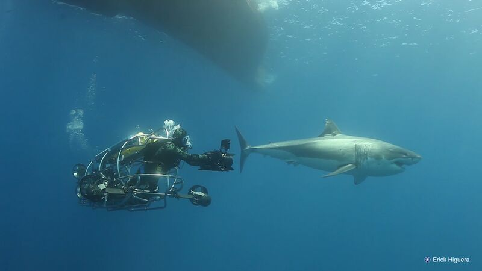

"When I went to Australia, I went shark diving. It was crazy. It was called 'extreme' shark diving because even though we were in cage, we literally could touch the sharks swimming by. They were huge and I'm terrified of sharks" - Taylor Lautner
"I don't think you can be a diver without a shark on the list" - Natalie Dormer
"Stop being afraid of diving in dark waters. Only those who are bold enough to try it, are going to find the deepest treasures."
"Very few things can compare to the adrenaline rush of coming face to face with a massive great white underwater and this is an experience that only a very small number of places around the world can offer you. It’s estimated that around 2/5 of the world’s great whites inhabit these waters so it’s a special place to view them." - Daniel Gillaspia
"If you dream of swimming with great white sharks, then cage diving is for you. With cage diving you climb into a metal cage that is lowered into the water, breathing from a scuba cylinder or hookah, allowing you to view great whites in their natural habitat. This description may immediately chill you with images of the scene in Jaws where the great white destroys Matt Hooper’s cage like it’s a papier-mâché piñata, but don’t worry — nobody has ever been killed by a great white when cage diving." - Terry Ward
"Great white shark diving in South Africa is world famous. While the bottle-green waters of South Africa might not deliver the clearest visibility of the four shark-diving destinations, entering the cage and watching from the boat in False Bay is your best opportunity for seeing the animals pull an incredible “Air Jaws” maneuver — breaching fully out of the water in pursuit of a fur seal or the towed decoy. Seal Island, a short 25-minute boat ride from the mainland and less than an hour from Cape Town, teems with the great white’s favorite snack: The roughly 64,000 Cape fur seals here — in addition to the healthy cormorant and penguin colonies — can be equated to a dinner bell that never stops chiming. Divers spend time in the cage as well as observing breaching events topside from the boat, as the crew drags a decoy seal behind the wake in hopes of encouraging the sharks to pull power lunges out of the water." - Terry Ward
"I realize I stopped being scared when my feet left the plane. I smile, realizing it's probably just like that for everything else I'm scared of, too."
"When I land, I feel like a new person. I get a hug from my tandem instructor, who's looking at me like she knows exactly what just happened to me, in a way that I'm not sure even *I* do yet. I feel like there's nothing I can't do. After all, I just jumped out of a plane."
